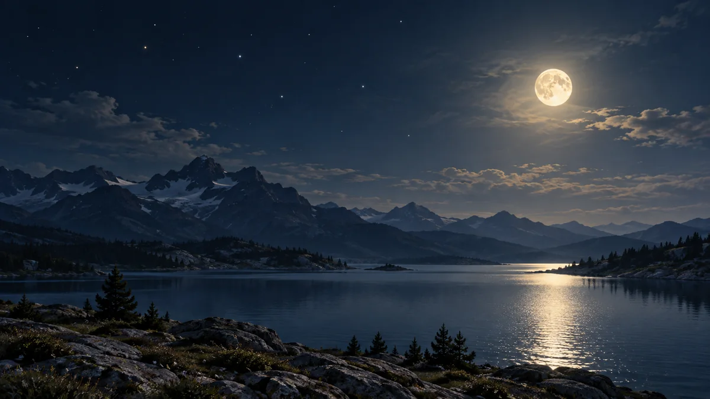

달이 밝은 밤에는 별 관측을 쉬어야 할까?
보름달이 뜨면 희미한 별과 은하수를 찾기 어려워집니다. 그래도 볼 대상은 남아 있어요. 달의 모양과 떠 있는 시간, 날씨를 함께 살피며 관측 계획을 바꿔보세요.

달빛은 하늘의 배경을 밝힙니다
도시 불빛을 피해 나왔는데도 별이 기대보다 적게 보인다면 달을 살펴보세요. 보름달에 가까운 밝은 달은 하늘의 배경을 환하게 만들어 희미한 별과 천체를 알아보기 어렵게 합니다. 별 자체가 어두워진 것이 아니라, 배경과 구분하기가 어려워진 거예요.
특히 은하수나 어두운 유성을 보고 싶다면 달빛은 중요한 조건입니다. 반대로 달이 밝다는 이유만으로 모든 관측이 실패하는 것은 아니에요. 먼저 오늘 보고 싶은 것이 희미한 빛인지, 밝은 천체인지 정하면 같은 밤에도 다른 계획을 세울 수 있습니다.[1]
달의 모양만 보지 말고 시간을 맞춰보세요
달력에 그려진 달 모양은 계획의 첫 단서입니다. 하지만 실제로 밖에 나갈 시간에 달이 떠 있는지도 함께 확인해야 해요. 같은 날짜에도 달이 지평선 아래에 있는 때와 하늘에 떠 있는 때는 조건이 다릅니다. 관측 장소를 기준으로 월출과 월몰 시각을 찾아보세요.
하늘 지도에서는 달과 관측 대상이 지평선 위로 얼마나 올라와 있는지도 살펴보면 좋습니다. 이를 고도라고 해요. 건물이나 산에 가리는 낮은 하늘과 탁 트인 방향을 구분하는 데 도움이 됩니다. 달 모양, 내 관측 시간, 볼 방향을 한 묶음으로 확인하는 겁니다. 특정 날짜의 위상 하나만으로 관측 성공을 보장할 수는 없어요.[1] [3]
밝은 밤에는 달을 주인공으로 삼아보세요
달이 떠 있다면 달 자체가 가까운 관측 대상입니다. 맨눈으로는 밝고 어두운 무늬를 비교하고, 쌍안경이 있다면 더 세밀하게 살펴볼 수 있어요. 큰 장비를 갖추기 전에도 시작할 수 있습니다. 오늘 보이는 무늬를 간단히 그려두었다가 다음 관측과 비교하는 방법도 있습니다.
크레이터와 산의 입체감을 보고 싶다면 보름달 외의 모양도 골라보세요. 표면에 생긴 그림자가 지형을 구분하는 데 도움이 됩니다. 둥글고 밝을수록 모든 세부가 더 잘 보이는 것은 아니죠. 달의 크기를 사진처럼 크게 보는 것보다, 밝은 곳과 어두운 곳의 경계를 따라 무늬를 찾는 목표부터 세워보세요.[2]
행성과 날씨까지 보고 오늘의 대상을 고르세요
금성이나 목성처럼 밝은 행성도 후보가 됩니다. 밝은 하늘에서도 찾을 만한 천체가 있다는 뜻이지, 어느 밤에나 모든 행성이 보인다는 뜻은 아니에요. 행성마다 보이는 시기와 방향이 달라서 현재 위치를 확인해야 합니다. ORBIT의 행성 화면에서 가까운 도시를 기준으로 볼 대상을 고를 수 있어요.
마지막으로 구름과 주변 조명을 살펴보세요. 달이 없는 날에도 날씨가 나쁘거나 시야가 막히면 기대한 장면을 보기 어렵습니다. 밤하늘 달력에서 달의 모습을 확인한 뒤, 월출·월몰과 현지 날씨는 별도로 확인해보세요. 달빛이 강하면 달이나 밝은 행성으로, 어두운 조건이 맞으면 희미한 대상으로 목표를 바꾸는 여유가 관측을 이어가게 해줍니다.[1] [3]
이 이야기를 확인한 자료
- NASA · How to Find Good Places to Stargaze ↗자료 확인 2026.09.27 · 원문 새 탭
- NASA · Moon Viewing Tips ↗자료 확인 2026.09.27 · 원문 새 탭
- NASA · Skywatching FAQ ↗자료 확인 2026.09.27 · 원문 새 탭
자료의 날짜와 적용 범위를 함께 확인해주세요. 오류 제보하기 →